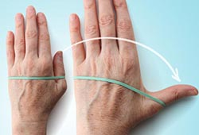

ေလ့က်င့္ ခန္း(၇)

၇။ လက္ မ ၾကြက္ သား သန္ မာခ်င္ ရင္ ေတာ့
လက္ ကို သား ေရကြင္း ႏွင့္ ပံုပါအတိုင္း စြပ္ ျပီး စားပြဲ ေပၚ တင္ ပါ။
လက္ မကို က်န္ လက္ ေခ်ာင္း မ်ားႏွင့္ ေဝးႏိုင္ သမွ် ေဝး ေအာင္ ေရႊ႕ ပါ။
မိနစ္ ဝက္ သို႕ တစ္ မိနစ္ ေလာက္ ၾကာေသာ္ လက္ ဝါးျဖန္႔ ပါ။
၁၀ၾကိမ္ ၁၅ၾကိမ္ ခန္႔ ျပဳလုပ္ ပါ။ တစ္ ပတ္ မွာ ၂ခါ - ၃ခါ သာ ျပဳလုပ္ ျပီး ၁၅ၾကိမ္ ၁ခါျပီးတိုင္း ၄၈နာရီ နားပါ။ လက္ မ ထိခိုက္ ေနသူမ်ား မျပဳလုပ္ ရ။